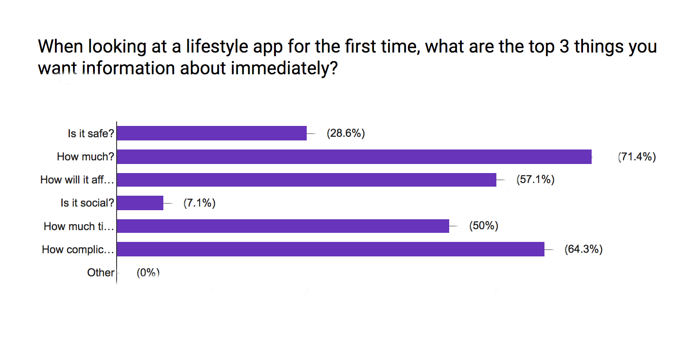
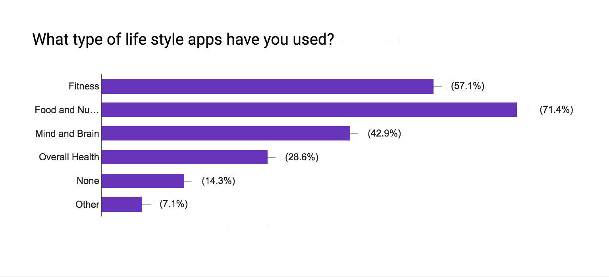
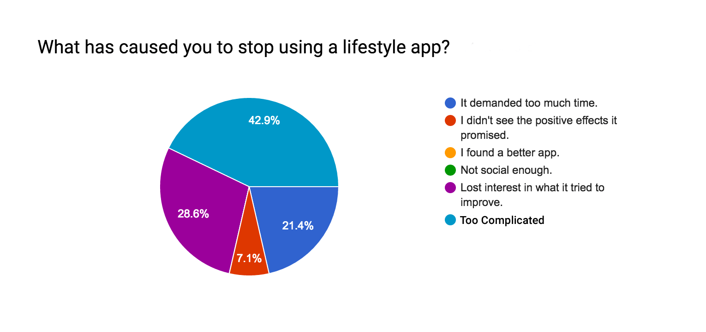
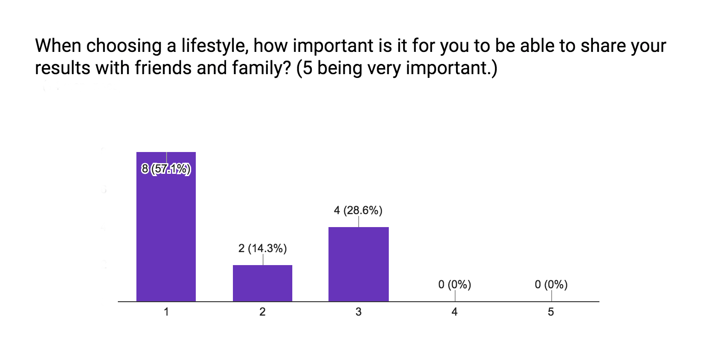
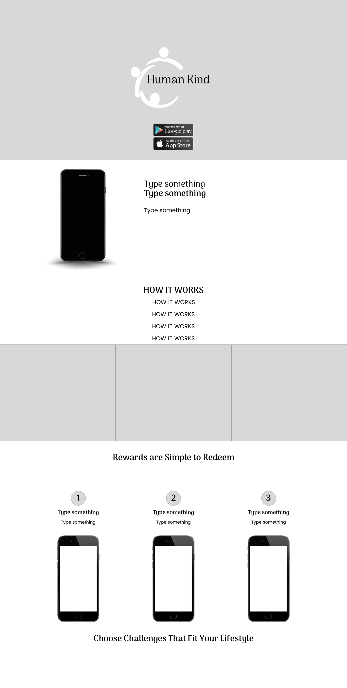
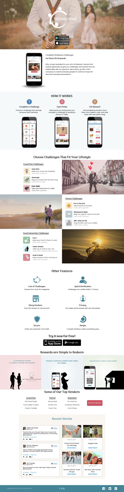
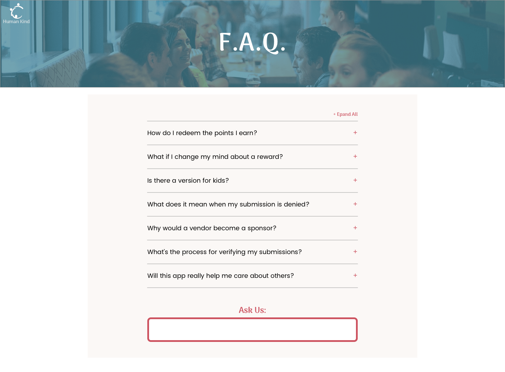
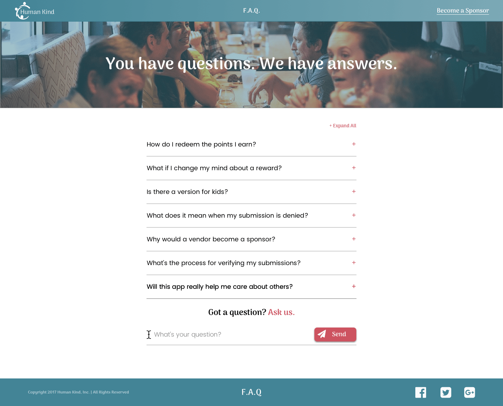
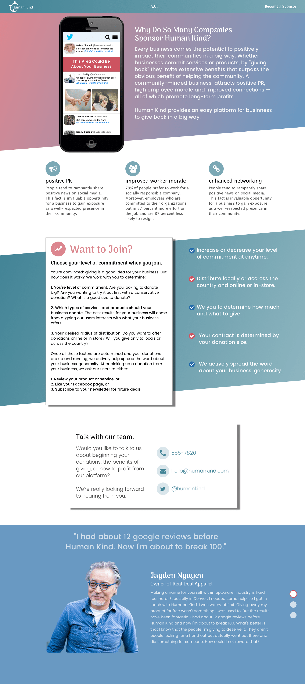

Human Kind
This lifestyle app challenged me to showcase a novel product by requiring band positioning, surveys, mockups, and development.

People receive points for filling cars with gas, flying in planes, and mastering video games. Why not receive points for acts of kindness? Human Kind responds to this question by prompting users to chose acts of kindness, giving them points upon completion, and allowing them to redeem those points for tangible rewards from sponsors. Good habits are formed through behavior reinforcement, and Human Kind attempts to make the world a better place by reinforcing the better angels of our nature. Check Out Live Demo
My task was to build a showcase for Human Kind, which would include a home page, a sponsor page, and a FAQ page. In short, my role was to take a novel idea and present it with all the succinctness of a billboard.
Human Kind’s greatest strength was its weakness: it had never been done before. Beyond its uniqueness, my role in the project was to inform, intrigue, and convert users (and sponsors) without washing them away in a firehose of information.
My solution was to listen to the users of lifestyle apps and conduct SWOT analyses of other apps that also present novel concepts. To gauge the importance of different types of information, I drafted a user survey that would informed me as to which information was essential to include and, consequently, exclude for the home page. This survey reduced the risk of too much content. As for the visual presentation, SWOT analyses inspired potential designs, taking a see-what-works approach to market positioning. Through these means, I constructed the skeleton and skin of my showcase.
To gain insights from users and protect against biases, I sent out a survey to discover what information was meaningful. This crucial step helped me determine what information was important to potential users.
With my survey, I wanted to understand:
1. What pieces of information were most important to users of lifestyle apps.
2. What lifestyle apps were most commonly used.
3. Why users stopped using lifestyle apps.
4. How important sharing results of lifestyle apps was to the user.
The survey was distributed across social media and online forums.
1. The three most important pieces of information answered the questions: How much? (71.4%); How will it affect my life? (64.3%); and How complicated is it (57.1%).
2. Most popularly used lifestyle apps included: Food and Nutrition (71.4%); Fitness (57.1%); Mind and Brain (42.9%).
3. The most common reason for users to stop using lifestyle apps was due to the app becoming too complicated (42.9%).
4. Most users gauged sharing results as unimportant (57.1%).
Price and Simplicity Would Need to be Central
This Info Helped to Determine Which Sites to Conduct SWOT Analyses Upon.
Reason for Unconverting (What to Guard Against)
Social Sharing Was Not Worth Highlighting.
The survey confirmed that Human Kind’s pricing, simplicity, and lifestyle benefits would need to be highlighted.
The survey informed me that highlighting the safety or social nature of the app would not be worth pursuing.
I did not expect sociability to rank so low as an important factor. Also, I decided to focus my SWOT analyses on nutrition and fitness apps since most users were already familiar with these types of lifestyle apps.
Human Kind had no direct competition, but inspiration could still be derived from the presentation of other unique lifestyle apps. My survey informed me that lifestyle app users preferred Nutrition, Fitness, and Mind apps. Using that information, I chose RelationUp, Rise, and Zombies, Run! for my SWOT analyses.
RelationUp, an app for relationship advice, did a good job explaining in simple terms what it set out to accomplish: giving psychological relief to those with relationship anxiety. But it had some glaring negatives too, such as an overly busy hero and a cold, clinical feel that lacked warm colors and human faces.
Rise attempts to put the power of a personal fitness trainer in the user’s pocket, and it presents its position in friendly terms and in an intuitive structure. However, some of its content was jumbled and it never highlighted the friendliness of its trainers, which could offset potential, timid users.
Zombies, Run! mixes apocalyptic narrative with jogging fitness, and its home page explains this concept with bare bones detail, which was very inspirational since it could have been easily crushed under an information overload. Yet, it could have also used some more information such as pricing (if it has any) or even a sample of the narrative.
Human Kind, as indicated by its name, needed to be personal, heartful, and inspirational. For its logo, I developed three workable concepts but couldn’t chose one over the others, so I let a user survey make that decision.
Unfortunately, The Survey Tied, So I Chose Between the Two Preferred Options (Opt 2)
In accordance with my brand strategy, I landed on a color palette that was both energetic and calming.
With all the preliminary work in place, I set out designing the three show case pages, which evolved according to peer and user testing.
Because Human Kind lived on mobile devices, I designed a few mobile screens for the home page.


I drew inspiration from Zombies, Run! for the layout of the first half of the Landing page.
Keeping the Hero and the Immediate Area Below the Fold Simple was Paramount
Feedback proved that this layout may suffer from being to simplistic, which was a weakness about Zombies, Run! as revealed in my SWOT analysis. So the first high fidelity draft looked a bit different.
1st High Fidelity Draft of Home Page
Feedback revealed a few short comings of this initial draft: its length proved labourious and some of its areas felt cluttered. Since the user survey informed me that users would see complixity as a huge turn off, I set out to simplify where I could.
The Challenge Section Received the Most Attention During This Revision.

Because Human Kind was new in concept, it was appropriate to have a FAQ page, especially to reduce perceived complixity.
The Accordion Layout was Appropiate to Keep the Display Simple
This first draft was well received. However, peer review suggested a few stylistic changes since a few elements felt out of place, such as the "ask us area".
2nd Draft of FAQ Page
The layout of the Sponsor page demanded a diffent style from the Landing and FAQ page since it had a different intended audience. Business people would most likely view this page, so information needed to come in the form of text, rather than imagery. Yet, the page still needed some flare to keep its readers interested. With these parameters defined, I decided to use the background of the page to maintain interest.
Diagonal Sections and Elements Breaking From Those Sections Gave the Layout Just Enough Flare Without Being Too Distracting.
For my past projects, I relied heavily on myself to determine the information hierarchy and design direction -creating ex nihilo. With this project, I wanted to rely on peer collaboration, user feedback, and SWOT analyses with my role being to develop from those ideas rather than create from my own. This methodology paid off by streamlining my project and providing confidence in its effect. Going into this project, I had doubts as to how intelligibly I could present Human Kind due to its uniqueness. On this side of the project, I know that that doubt was well founded: I alone could not develop an intelligible showcase, but I could do so with the help of others.
The greatest weakness for my showcase lies in knowing the effectiveness of my Sponsor page. Time and resources limited my ability to conduct research through user surveys and appropriate user testing for that page. Also, it would have been nice to know if any tax breaks could be offered as an incentive for businesses to become sponsors. In retrospect, I would have pursued more client research for this page.
Collaboration is essential in crafting a finely-toned solution. People (generally speaking) know what they want, so it’s best to listen to them for direction. As for design, don’t reinvent the wheel. Look at what’s already out there for inspiration -what works, what doesn’t. Not all answers can be found within yourself.